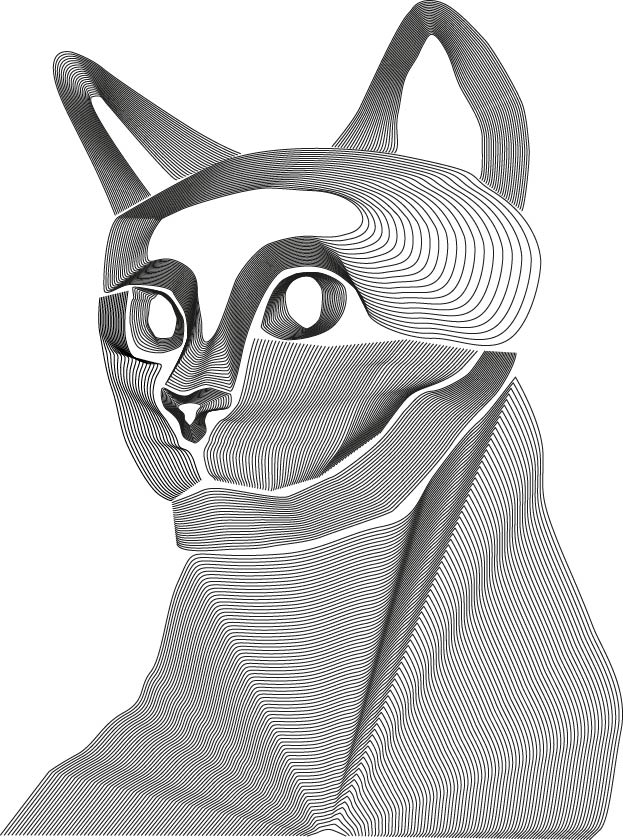
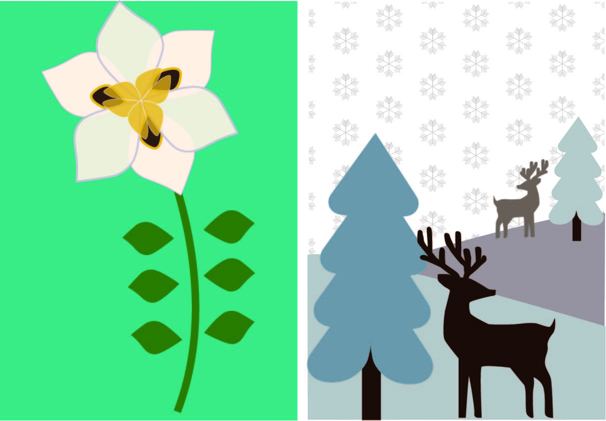
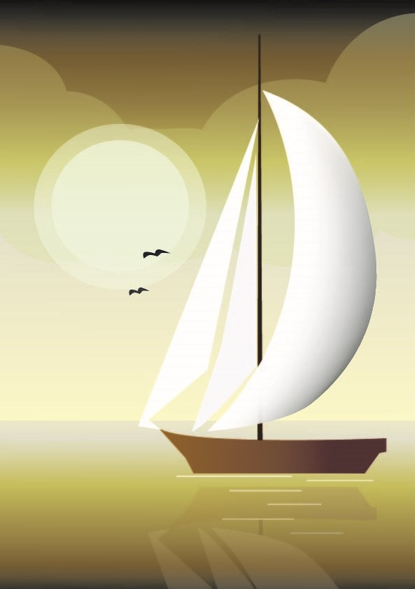
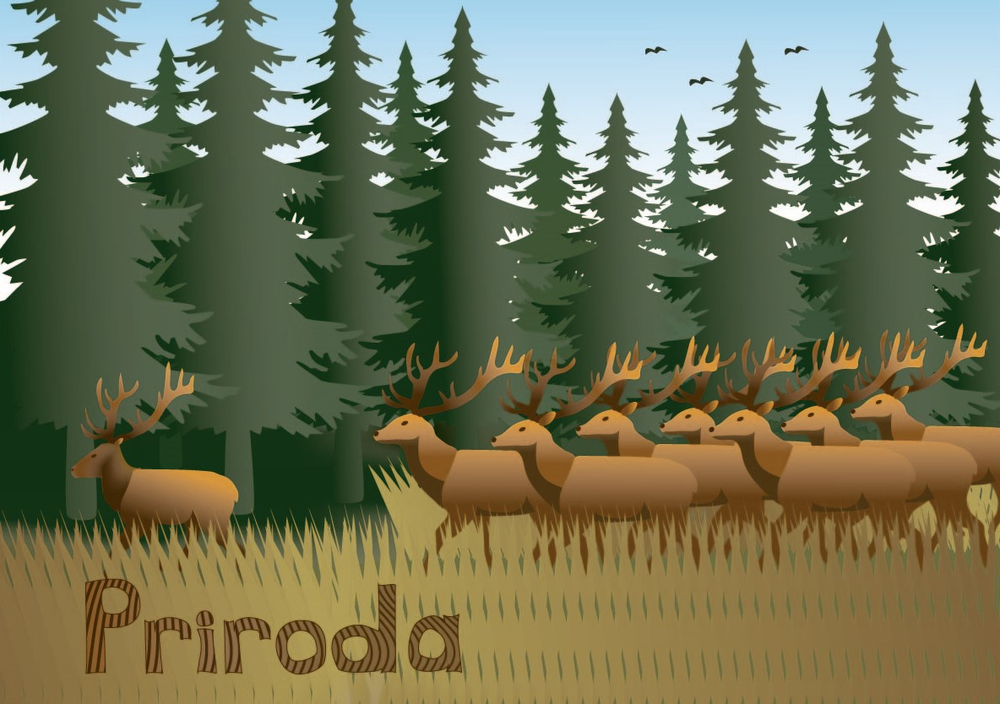
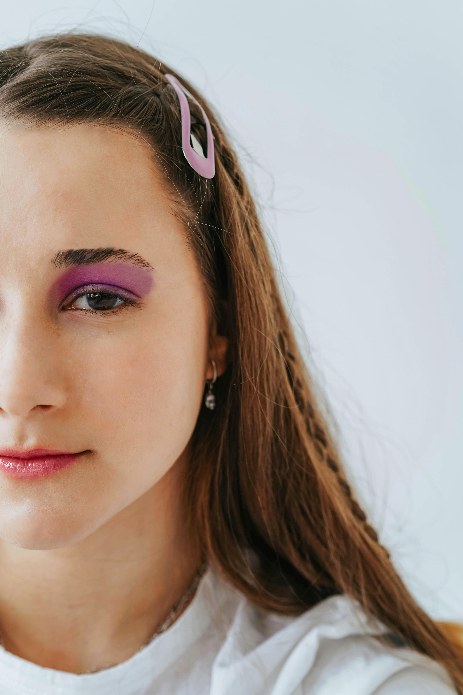
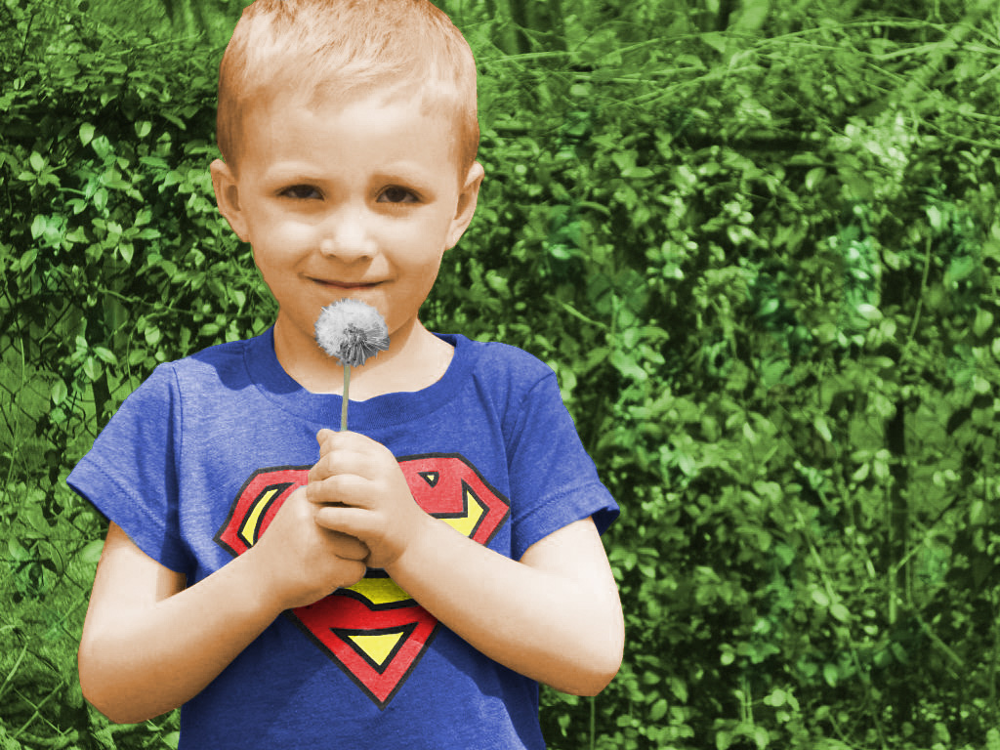
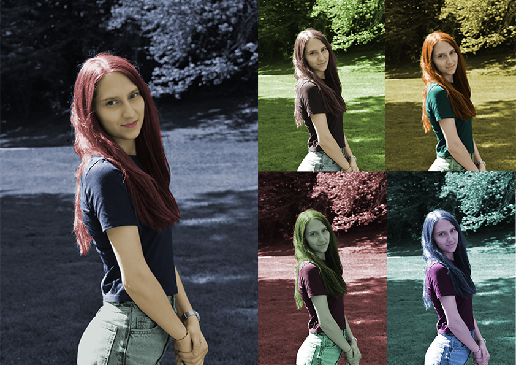
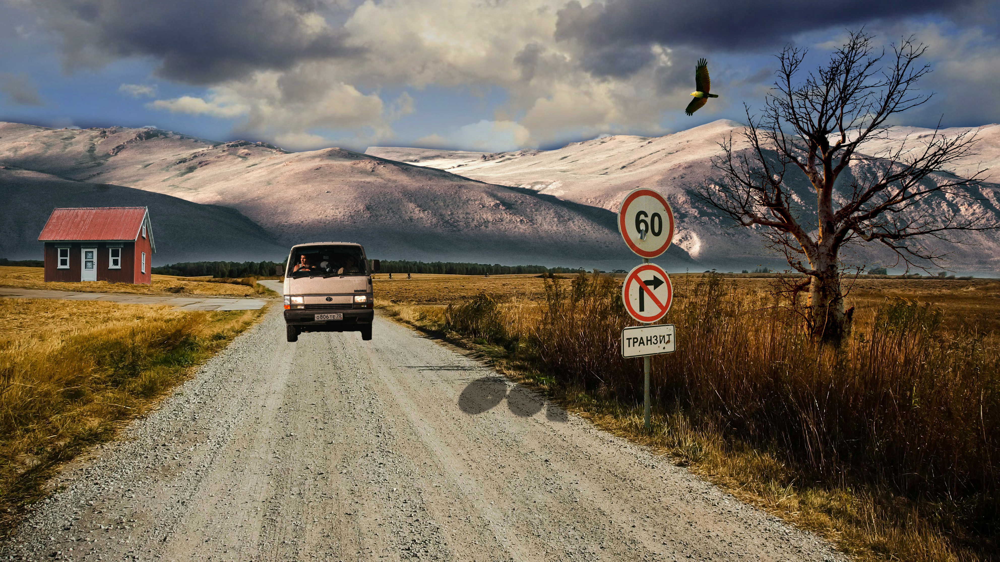

Slika 1. Ovdje sam trebala izraditi vlastiti dizajn s krivuljama pomoću Blend alata.

Slika 2. U ovoj vježbi trebala sam koristiti rotacije, scale, transparenciju, multipliciranje oblika, definiranje uzoraka…

Slika 3. U ovoj vježbi trebala sam kreirati vlastiti složeni objekt koristeći tehnike spajanja i izrezivanja objekata te primijenjivati različite vrste gradijenata i transparencije.

Slika 4. U ovom projektnom zadatku trebala sam pomoću alata za crtanje Bezierovih krivulja nacrtati sliku prema zadanom predlošku tako da koristim tehnike poput blenda, clipping maska, različite transformacije, gradijente...
Piksel grafika

Slika 5. U ovoj vježbi koristila sam tehnike digitalnog retuširanja fotografija za postizanje realističnog efekta.

Slika 6. U ovoj vježbi prolazili smo kroz tehnike neinvazivnog koloriranja slike koje se može primijeniti na crno-bijele slike ili slike u boji kojima želimo promijeniti nijansu određenih područja.

Slika 7. U ovoj vježbi trebali smo uzeti vlastitu fotografiju i napraviti pet primjera iste slike sa različitim postavkama kolorizacije.

Slika 8. U ovoj vježbi trebali smo koristiti različite tehnike selektiranja jednostavnih i složenih oblika. Jednostavne tehnike selekcije uključuju alate kojima selektiramo poligone i oštre rubove objekata, a složenije tehnike selekcije podrazumijevaju selekciju putem kanala slike ili crtanje maski brush i eraser alatima u modu quick mask. Vježba se bavi i izradom i uklapanjem sjena objekata koje smo uvezli izrezivanjem i korekcijom boja kako bi se pojačao dojam realističnosti.Slika 9. U ovom projektnom zadatku trebali smo napraviti kompoziciju više fotografija koristeći tehnike
retuširanja, fotomontaže i koloriranja.
Web/video
Kinemagraf 1. U ovoj vježbi trebali smo izraditi kinemagraf čija je karakteristika spajanje statične i pokretne slike. Kinemagraf 2. U ovoj vježbi trebali smo snimiti vlastiti kratki video (ili naći besplatni video isječak sa neke stock baze) te obraditi ga kao kinemagraf.Video 1. U ovoj vježbi spajali smo dva isječka videa, postavljali video efekte te ubacivali tekst.Video 2. U ovoj vježbi trebali smo napraviti video s nekoliko isječaka, koristiti različite efekte i animacije.